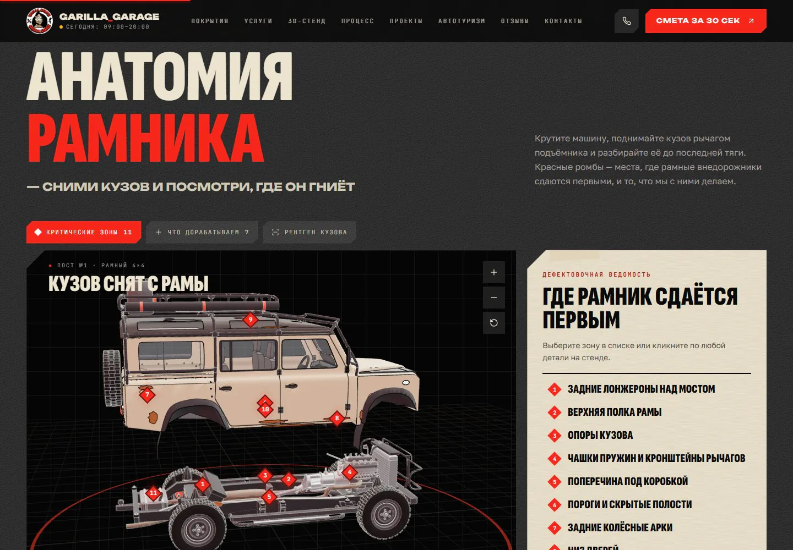
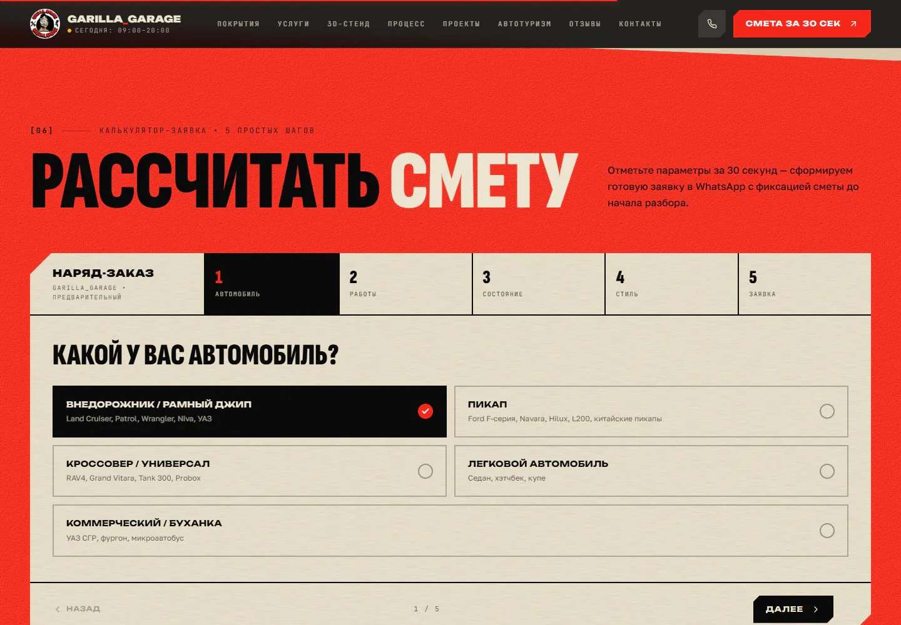

Сайт с 3D-стендом
GARILLA_GARAGE
Тюнинг-ателье для рамных внедорожников: 3D-разбор и расчёт сметы.

Первый экран опубликованной версии GARILLA_GARAGE
О проекте
Одностраничный сайт внедорожного тюнинг-ателье в стиле «Трафарет и шагрень»: плакатная типографика, срезы как у букв логотипа, фактура RAPTOR. В 3D-стенде «Анатомия рамника» кузов поднимается над рамой и разбирается на 36 узлов с 11 зонами коррозии и 7 доработками. Калькулятор из пяти шагов собирает заявку для WhatsApp.
Что внутри
- 3D-стенд на three.js: 36 узлов, 11 зон коррозии, 7 доработок
- Лаборатория покрытий RAPTOR и слайдер «до/после»
- Калькулятор-заявка из пяти шагов
- Галерея проектов и раздел об автотуризме
Экраны проекта



